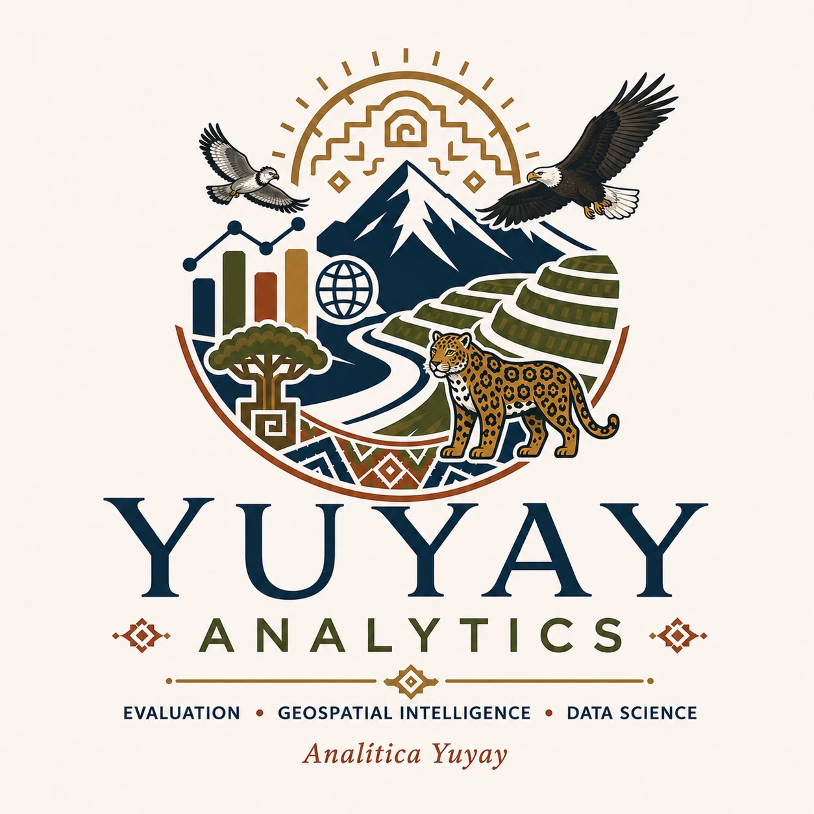
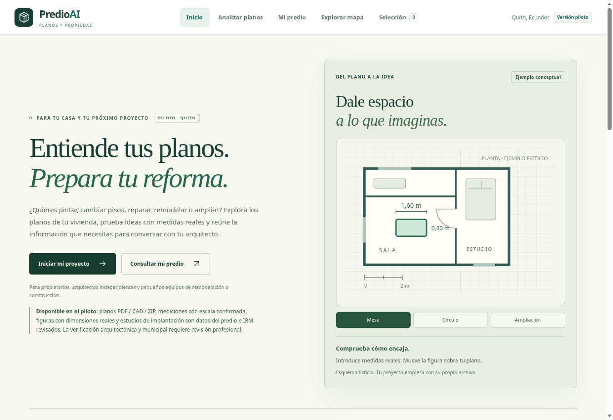

Environmental Programme Evaluation
Independent evaluation of climate, biodiversity, conservation and sustainable development programmes.
Explore services →
International environmental evaluation and sustainability consulting, strengthened by advanced data science and geospatial analytics.
Explore our experience →What we do
Independent evaluation of climate, biodiversity, conservation and sustainable development programmes.
Explore services →Deforestation risk, land-use change, watershed analysis, remote sensing and regional assessments.
Explore services →Interactive dashboards, spatial decision tools and custom applications that turn complex data into usable workflows.
Explore applied workOil and gas well classification, coal ash modeling, carbon storage research and environmental data engineering.
Explore services →Applied business & geospatial analytics
Independent software developed by Jay Oliver shows how data engineering, spatial analysis and interactive applications can support everyday decisions.
Featured product · Quito, Ecuador
Creator & sole developer: Jay Oliver

A property and remodeling workspace that brings Quito cadastral data, municipal planning information and interactive PDF/CAD drawings into one application.
Python · FastAPI · REST APIs · React · Leaflet · Shapely · PDF/CAD
Business analytics example
Turn transaction CSVs into interactive spending summaries, category and merchant filters, editable classifications and exportable reports.
Python runs in the browser through Pyodide, with JavaScript and Plotly for the interface and charts. Statement processing stays in the browser.
A practical example of reusable data workflows and clear reporting interfaces.
International & U.S. experience
The people behind Yuyay Analytics
Two complementary areas of expertise: international programme evaluation and applied data science, geospatial intelligence and engineering.
More than four decades of experience in sustainability, biodiversity, climate adaptation and institutional programme evaluation.
Evaluation reports →Over six years of experience in environmental and energy research, machine learning, geospatial engineering and automated data systems. Creator and sole developer of PredioAI, connecting this expertise with practical software for Quito.
Research publications →